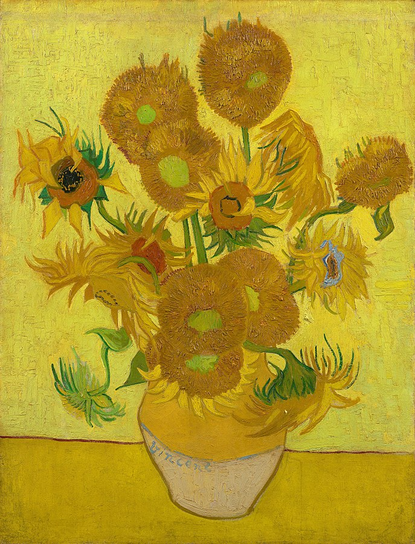
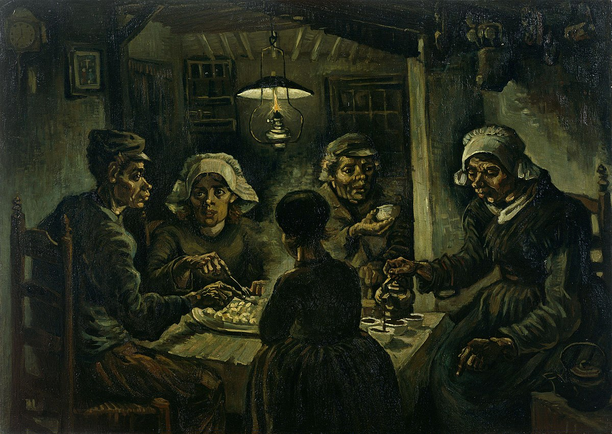
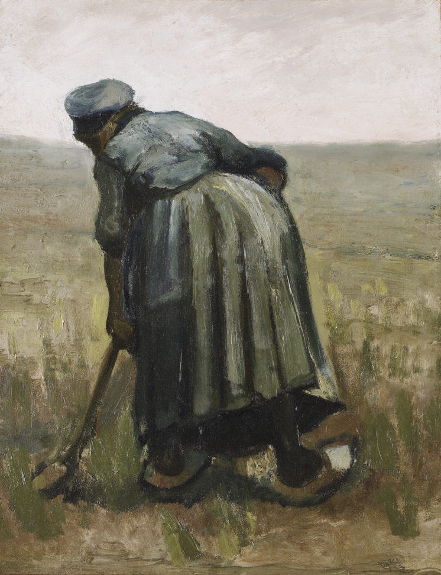
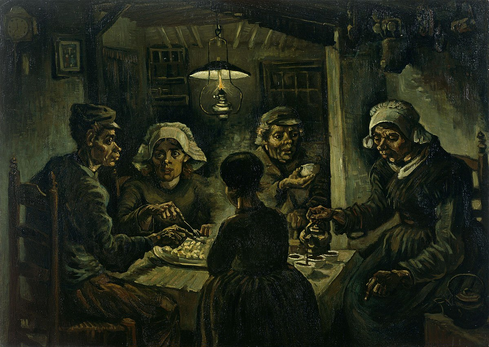
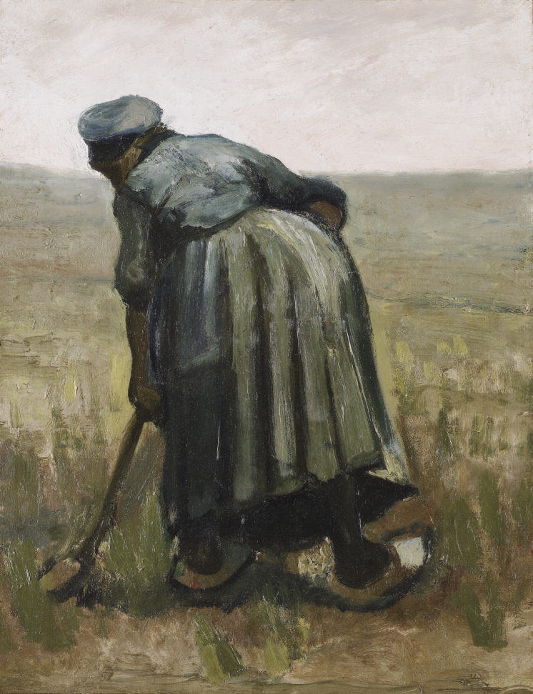

Vincent van Gogh
Vincent Willem van Gogh (Dutch: [ˈvɪnsɛnt ˈʋɪləm vɑn ˈɣɔx] (About this sound listen);[note 1] 30 March 1853 – 29 July 1890) was a Dutch Post-Impressionist painter who is among the most famous and influential figures in the history of Western art. In just over a decade he created about 2,100 artworks, including around 860 oil paintings, most of them in the last two years of his life. They include landscapes, still lifes, portraits and self-portraits, and are characterised by bold colours and dramatic, impulsive and expressive brushwork that contributed to the foundations of modern art. His suicide at 37 followed years of mental illness and poverty.
文森特·威廉·梵·高
文森特·威廉·梵·高(Vincent Willem van Gogh,1853-1890)，别名“梵高”或"梵谷"，荷兰后印象派画家。出生于新教牧师家庭，是后印象主义的先驱，并深深地影响了二十世纪艺术，尤其是野兽派与表现主义。 他早期受荷兰画家马蒂斯·玛丽斯的影响以灰暗色系进行创作，直到他搬往巴黎与作为画商的弟弟同住，接触了当时震动了整个巴黎美术界的画家们，画风渐渐被印象派的画家影响，后来经过在野外的长期写生，色调渐渐由灰暗色系变为明亮色系。在他去世之后，他的作品《星夜》、《向日葵》与《麦田乌鸦》等，已跻身于全球最著名最珍贵的艺术作品的行列。 文森特的作品目前主要收纳在阿姆斯特丹的梵高美术馆，以及奥特洛的国立克罗-米勒美术馆。
Art Works




Sun Flowers

Potato Eaters

Woman with A Spade
Starry Night